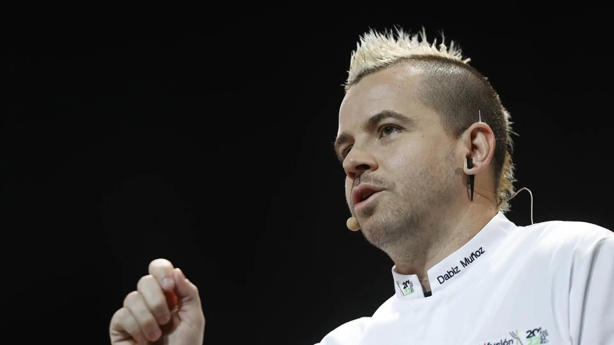

David Muñoz Rosillo (Madrid, 15 de enero de 1980), también conocido como Dabiz Muñoz, es un cocinero español especializado en cocina de vanguardia. Su restaurante DiverXo ha recibido tres estrellas michelín. Después de su paso por los restaurantes Viridiana, Catamarán y Chantarella, trabajó en restaurantes especializados en gastronomía asiática de Londres.Muñoz se instaló en Madrid en el año 2007.En 2010, recibió la primera estrella Michelin. Dos años después, obtuvo la segunda estrella y abrió el local StreetXO, en el Gourmet Experience de El Corte Inglés de la calle de Serrano, una propuesta más informal que DiverXO. En 2007 inauguró DiverXO, un restaurante de cocina fusión por el que recibió en 2012 su segunda estrella Michelín. Muñoz ofrece una cocina compleja y que presenta diversas técnicas y productos de diferentes gastronomías. En 2013, pasó a ser el octavo restaurante de España, y único de Madrid, con tres estrellas Michelín.En 2014, el restaurante se trasladó al hotel madrileño Eurobuilding, propiedad de la cadena NH Hotel Group. Dos años más tarde, Muñoz abrió la sucursal londinense, llamada StreetXoLondon, en la zona de Mayfair
